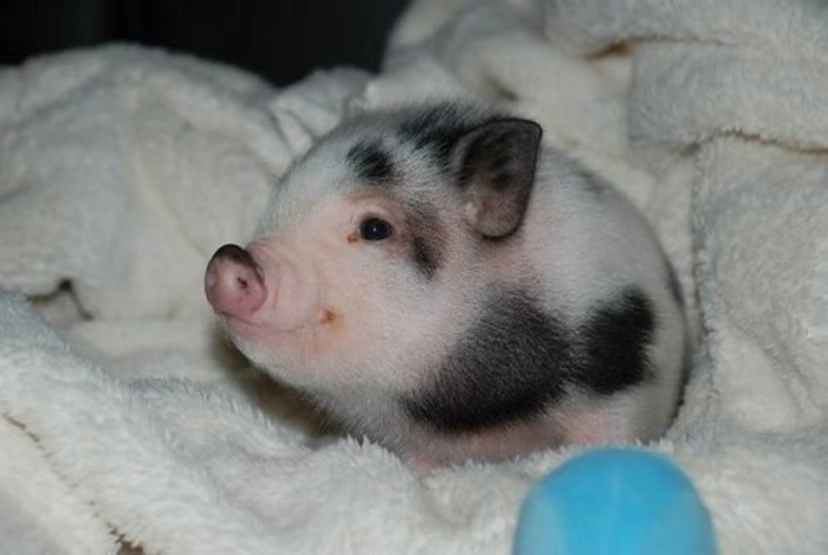

Gottinngen Mini Pig
The Göttingen Minipig is a breed of domestic pig developed in the 1960s in Germany by specialists at the University of Göttingen. Vietnamese Pot-bellied pigs, Minnesota Minipigs, and German Landrace pigs were used in its development.
Read more